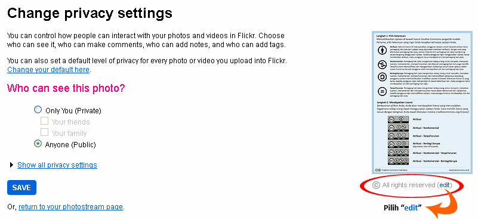
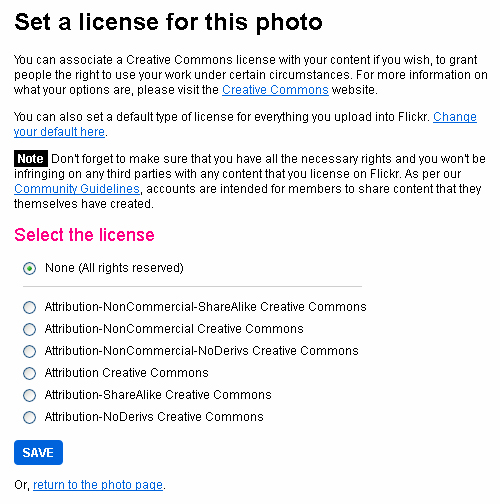
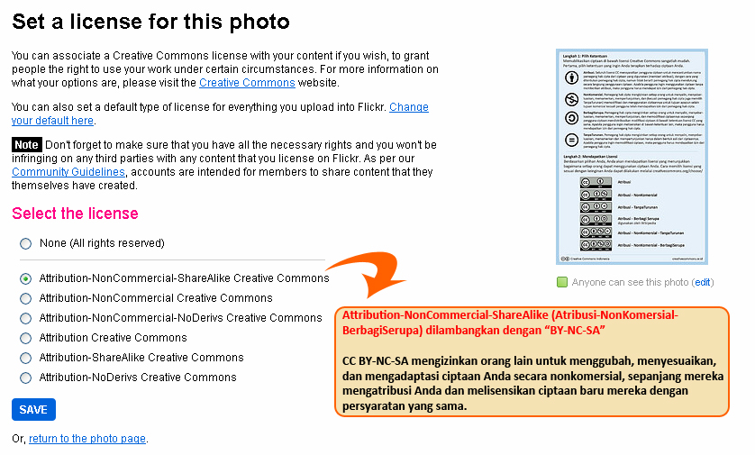
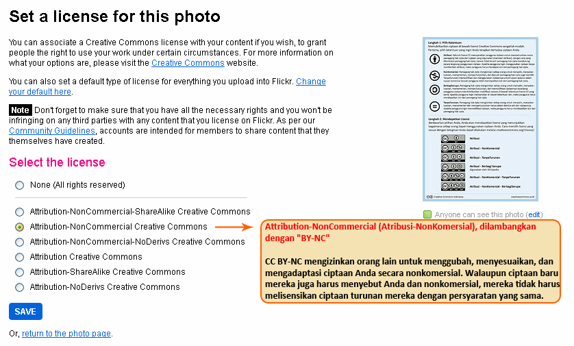
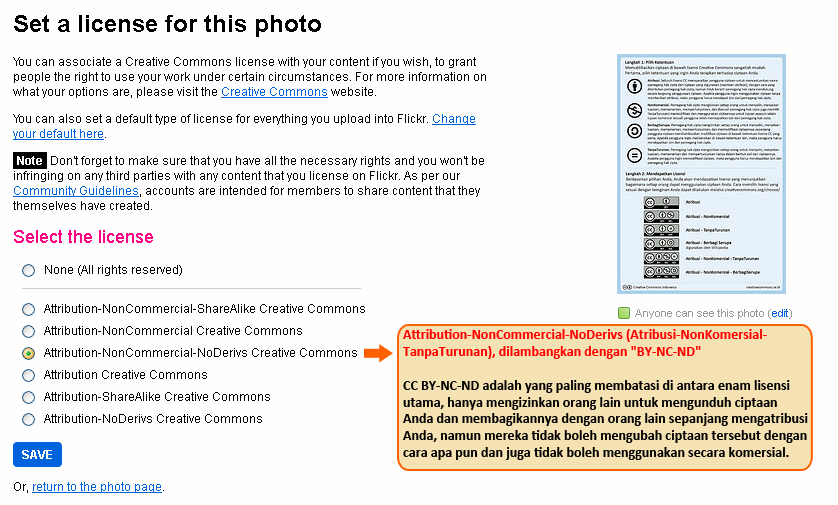
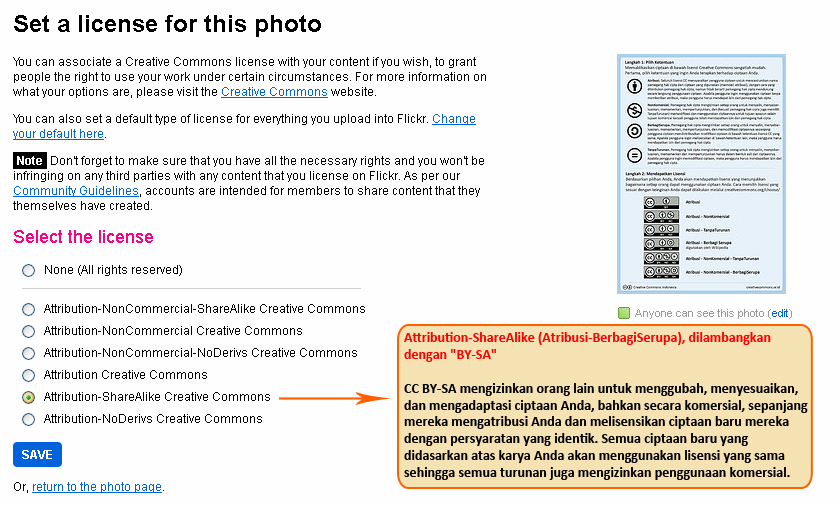
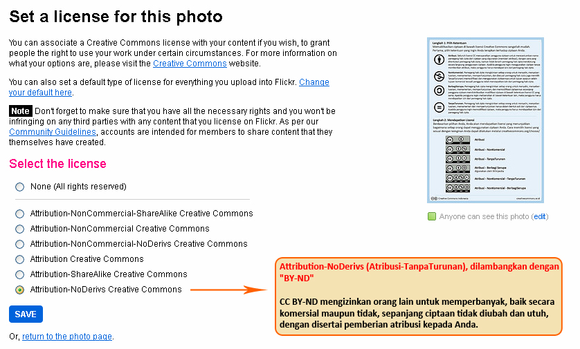

Pilihan Lisensi Creative Commons di Flickr
Flickr http://www.flickr.com adalah salah satu situs yang memungkinkan setiap orang mengunggah foto dan melisensikannya di bawah lisensi CC. Untuk menentukan lisensi CC yang dapat Anda pilih, Anda dapat klik tulisan “edit” di bawah foto yang telah Anda unggah dan kemudian klik tulisan “edit” di samping tulisan “All rights reserved”.

Selanjutnya, Anda akan dihadapkan dengan 7 pilihan:

- None (All rights reserved), atau hak cipta penuh
- Attribution-NonCommercial-ShareAlike Creative Commons (Atribusi-NonKomersial-BerbagiSerupa)
- Attribution-NonCommercial Creative Commons (Atribusi-NonKomersial)
- Attribution-NonCommercial-NoDerivs Creative Commons (Atribusi-NonKomersial-TanpaTurunan)
- Attribution Creative Commons (Atribusi)
- Attribution-ShareAlike Creative Commons (Atribusi-BerbagiSerupa)
- Attribution-NoDerivs Creative Commons (Atribusi-TanpaTurunan)
Pilihan pertama adalah hak cipta penuh. Sementara pilihan kedua sampai dengan pilihan ketujuh merupakan jenis-jenis lisensi CC. Untuk Anda yang belum akrab dengan peristilahan dalam lisensi CC, pilihan-pilihan ini mungkin akan terlihat membingungkan. Berikut penjelasan lebih lanjut:

Attribution-NonCommercial-ShareAlike Creative Commons, dilambangkan dengan “CC BY-NC-SA” Lisensi ini mengizinkan orang lain untuk menggubah, menyesuaikan, dan mengadaptasi ciptaan Anda secara nonkomersial, sepanjang mereka mengatribusi Anda dan melisensikan ciptaan baru mereka dengan persyaratan yang sama.
{kind=link}

Attribution-NonCommercial Creative Commons, dilambangkan dengan “CC BY-NC” Lisensi ini mengizinkan orang lain untuk menggubah, menyesuaikan, dan mengadaptasi ciptaan Anda secara nonkomersial. Walaupun ciptaan baru mereka juga harus menyebut Anda dan nonkomersial, mereka tidak harus melisensikan ciptaan turunan mereka dengan persyaratan yang sama.

Attribution-NonCommercial-NoDerivatives Creative Commons, dilambangkan dengan “CC BY-NC-ND” Lisensi ini paling membatasi di antara enam lisensi utama, hanya mengizinkan orang lain untuk mengunduh ciptaan Anda dan membagikannya dengan orang lain sepanjang mengatribusi Anda, namun mereka tidak boleh mengubah ciptaan tersebut dengan cara apa pun dan juga tidak boleh menggunakan secara komersial.

Attribution Creative Commons, dilambangkan dengan “CC BY” Lisensi ini mengizinkan orang lain untuk mengumumkan, menggubah, menyesuaikan, dan mengadaptasi ciptaan Anda, bahkan secara komersial, sepanjang mereka mengatribusi Anda untuk ciptaan asli. Ini adalah lisensi paling terbuka dan disarankan untuk penyebaran dan penggunaan bahan berlisensi secara maksimal.Semua ciptaan baru yang didasarkan atas karya Anda akan menggunakan lisensi yang sama sehingga semua turunan juga mengizinkan penggunaan komersial. Lisensi ini digunakan oleh Wikipedia serta dianjurkan untuk bahan yang akan mendapat manfaat dengan menyertakan konten dari Wikipedia dan proyek berlisensi serupa.
{kind=link}

Attribution-ShareAlike Creative Commons, dilambangkan dengan “CC BY-SA” Lisensi ini mengizinkan orang lain untuk menggubah, menyesuaikan, dan mengadaptasi ciptaan Anda, bahkan secara komersial, sepanjang mereka mengatribusi Anda dan melisensikan ciptaan baru mereka dengan persyaratan yang identik. Lisensi ini sering disamakan dengan lisensi “copyleft” perangkat lunak bebas dan sumber terbuka. Semua ciptaan baru yang didasarkan atas karya Anda akan menggunakan lisensi yang sama sehingga semua turunan juga mengizinkan penggunaan komersial. Lisensi ini digunakan oleh Wikipedia serta dianjurkan untuk bahan yang akan mendapat manfaat dengan menyertakan konten dari Wikipedia dan proyek berlisensi serupa.

Attribution-NoDerivatives Creative Commons, dilambangkan dengan “CC BY-ND” Lisensi ini mengizinkan orang lain untuk memperbanyak, baik secara komersial maupun tidak, sepanjang ciptaan tidak diubah dan utuh, dengan disertai pemberian atribusi kepada Anda.
{kind=link}
Masih belum jelas? Jangan ragu untuk kunjungi laman FAQ kami atau kirim surel ke info@creativecommons.or.id.
Tags:
Oleh: Alifia Qonita Sudharto
12 Dec 2011Kategori:
Berita Terbaru
- Lokakarya Hak Cipta dan Lisensi Creative Commons di Pekanbaru
- Pengumuman Resmi: Hasil Akhir Training of Trainers Creative Commons Indonesia
- Literatur tentang Model Bisnis Terbuka "Made With CC"
- Data dan Artikel Ilmiah Terbuka dari PLOS!
- Konten Format Model 3 Dimensi Berilsensi CC di Platform Sketchfab